ZeroG crystal/material update — Minecraft 1.21.1
96 texture PNGs · 80 editable Blockbench projects. Offline references, not in-game screenshots.
The historical catalogue remains unchanged. Runtime code is on 1.21.x; jar and player guide are on Docs.
Current candidate and installation guide
· Historical full collection · Notes and limits
Star Glass and crystal growth 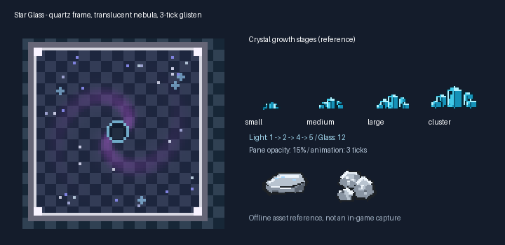
Light: crystal stages 1/2/4/5; Star Glass 12. Three colour states, sixteen 64px frames, 3 ticks each.
Blockbench glass displays frame zero; runtime mcmeta animates it.
Planet Star Sands 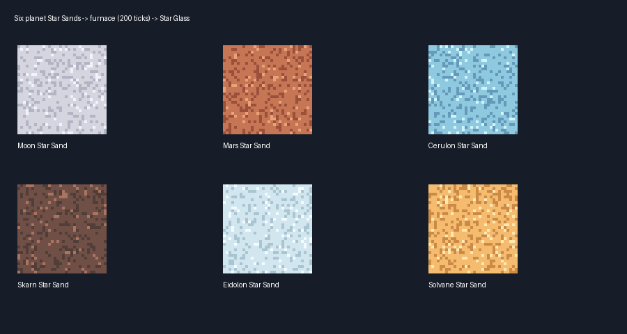
Sixteen ingot/raw-metal pairs 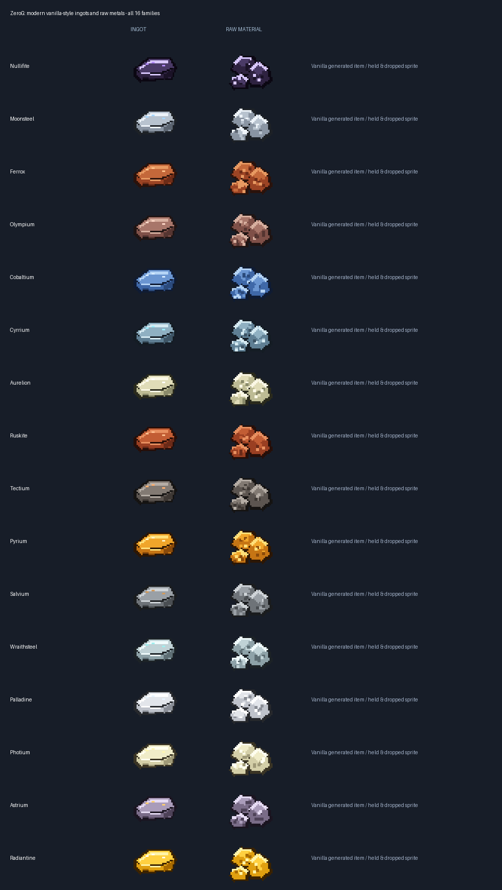
Editable models Open one project at a time in Blockbench Native 32px texture roster block/cerulite_cluster.png block/brine_crystal.png block/frost_crystal.png block/prism_cluster.png item/selenite.png block/selenite_block.png 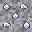
block/selenite_ore.png item/aresite.png block/aresite_block.png 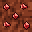
block/aresite_ore.png item/cerulite.png block/cerulite_block.png 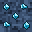
block/cerulite_ore.png item/lumenite.png block/lumenite_block.png 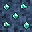
block/lumenite_ore.png item/skarnite.png block/skarnite_block.png 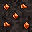
block/skarnite_ore.png item/cinnabrite.png block/cinnabrite_block.png 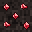
block/cinnabrite_ore.png item/eidolite.png block/eidolite_block.png 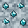
block/eidolite_ore.png item/rimeglass.png block/rimeglass_block.png 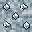
block/rimeglass_ore.png item/solvanite.png block/solvanite_block.png 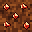
block/solvanite_ore.png item/dawnstone.png 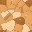
block/dawnstone_block.png 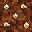
block/dawnstone_ore.png item/nullifite_ingot.png 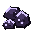
item/raw_nullifite.png item/moonsteel_ingot.png 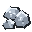
item/raw_moonsteel.png 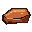
item/ferrox_ingot.png 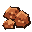
item/raw_ferrox.png item/olympium_ingot.png item/raw_olympium.png item/cobaltium_ingot.png item/raw_cobaltium.png item/cyrrium_ingot.png item/raw_cyrrium.png 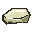
item/aurelion_ingot.png 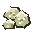
item/raw_aurelion.png item/ruskite_ingot.png 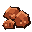
item/raw_ruskite.png item/tectium_ingot.png 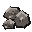
item/raw_tectium.png 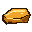
item/pyrium_ingot.png 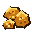
item/raw_pyrium.png item/salvium_ingot.png 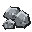
item/raw_salvium.png item/wraithsteel_ingot.png item/raw_wraithsteel.png item/palladine_ingot.png item/raw_palladine.png 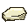
item/photium_ingot.png 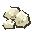
item/raw_photium.png item/astrium_ingot.png 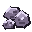
item/raw_astrium.png item/radiantine_ingot.png 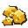
item/raw_radiantine.png block/budding_cerulite.png block/cerulean_geode_shell.png 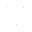
block/budding_cerulite_emissive.png block/budding_cerulite_glowmask.png block/cerulite_cluster_emissive.png block/cerulite_cluster_glowmask.png block/small_cerulite_bud.png block/medium_cerulite_bud.png block/large_cerulite_bud.png block/small_brine_bud.png block/medium_brine_bud.png block/large_brine_bud.png block/budding_brine_crystal.png block/small_frost_bud.png block/medium_frost_bud.png block/large_frost_bud.png block/budding_frost_crystal.png block/small_prism_bud.png block/medium_prism_bud.png block/large_prism_bud.png block/budding_prism_crystal.png block/moon_star_sand.png 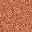
block/mars_star_sand.png block/cerulon_star_sand.png 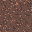
block/skarn_star_sand.png block/eidolon_star_sand.png 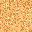
block/solvane_star_sand.png Grayscale Brine/Frost/Prism textures are tinted in-game. Displayed source tiles are not their final dimension colour.
Star Glass uses translucent pane art, not a parallax shader. Sand registration/furnace recipes are present; modpack visual validation remains pending.
Current soil, fluid, miniature bee and cosmic Blaze additions .